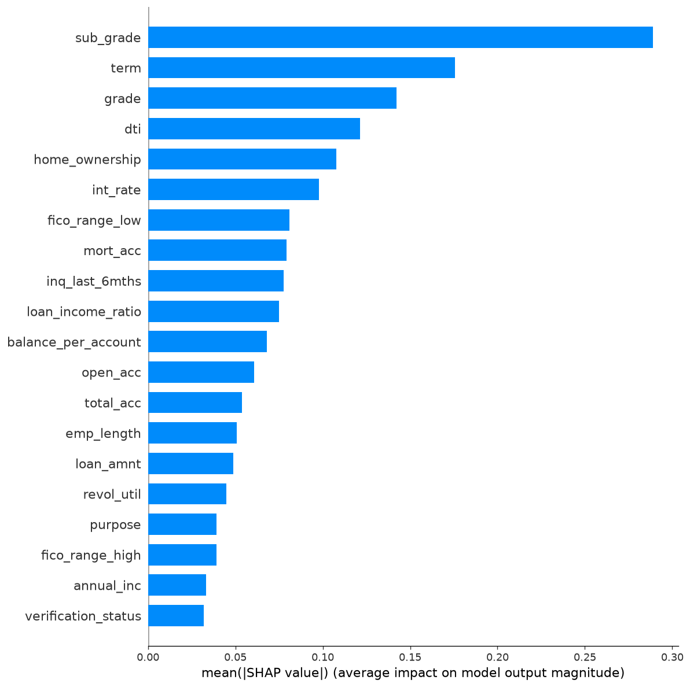
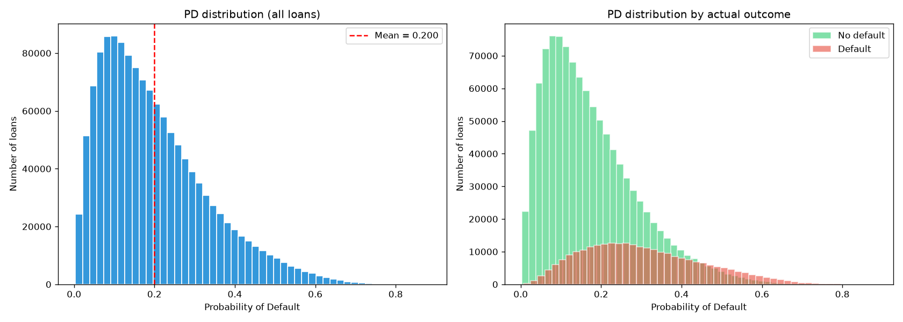

A gradient-boosted tree model trained on 1.3 million Lending Club loans. Calibrated, leakage-free, and deployed to run entirely in your browser.
Everything you need to know about the final model at a glance.
| Algorithm | LightGBM (GBDT) |
| Version | v5 |
| Features | 41 |
| Training rows | 1,078,479 |
| Test rows | 269,620 |
| Default rate | 19.98% |
| Learning rate | 0.011 |
| Max boosting rounds | 8,000 |
| Average best iteration | 4,034 |
| Trees in final model | 4,235 |
| Validation | Stratified 5-Fold CV |
| ONNX parity | Max diff 5.47e-07 |
Six iterations. One critical discovery. A deliberate 1% AUC sacrifice for fairness and production-readiness.
| Version | Features | AUC | Note |
|---|---|---|---|
| v1 baseline | 47 | 0.7349 | LightGBM, no tuning |
| v2 | 47 | 0.7357 | Optuna Trial #17 |
| v3 | 47 | 0.7363 | With leakage ⚠️ |
| v4 | 43 | 0.7286 | Leakage removed, hit ceiling |
| v5 ✅ | 41 | 0.7287 | Final, early stopping triggered |
| v6 | 41 | 0.7283 | 50% fewer trees, same AUC |
Note: "Features" counts may differ between versions due to DataFrame vs. model feature definitions. See the Process page for the full story.
SHAP values on the final model. After removing leakage features,
int_rate jumped from rank 14 to rank 6 — doubling its importance.

The predicted probability of default matches the actual default rate. This is critical for any financial application.

What this model does not do — stated honestly.
Lending Club is a difficult, noisy dataset. Realistic ceilings for well-designed models sit around 0.73–0.75. Our model is at the top of that range, but not beyond.
We use an industry-standard Loss Given Default of 45%. A production system would estimate LGD from recovery data, which we do not have access to.
We removed addr_state because of fairness
concerns and noise. A complete audit would also test for disparate
impact across race and gender proxies — out of scope for this project.
Two ways to try the model — pick based on your priority.
Real SHAP, portfolio simulation, counterfactual, batch prediction.
Open Analysis Tool ↗